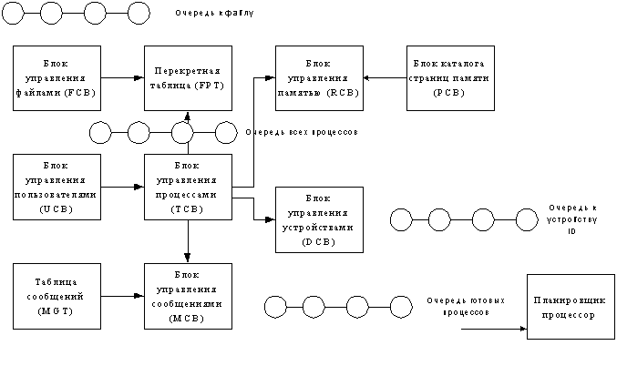
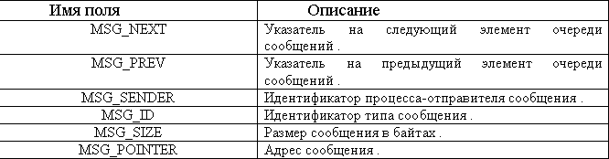

База данных ОС
ОС в основном базируется на таблицах. Природа ОС определяется системными
параметрами и константами.
База данных ОС содержит всю информацию, необходимую ей для функционирования. БД
состоит из статической части и динамической. Размер статической части не
изменяется, а динамическая может изменять свой размер в процессе работы системы.
Динамическая часть загружается за пределы системного пула. В БД содержится
информация о запущенных процессах, открытых файлах, подключенных пользователях и
т.д.
БД должна содержать следующие управляющие блоки:
- Блок управления пользователями.
- Блок управления файлами
- Блок управления памятью
- Блок управления каталога страниц памяти.
- Блок управления процессами.
- Блок управления устройствами.
- Блок управления сообщениями.
БД должна содержать список очередей процессов:
Каждая очередь базы данных операционной системы представляет собой двусвязный
динамический список с указателями на начало и конец очереди.
Каждый процесс имеет свою отдельную очередь сообщений .
Каждый блок управления процессом содержит указатели на начало и конец своей
очереди сообщений .
Список всех запущенных в системе процессов , содержит все процессы , которые также
содержатся в очереди готовых процессов , очереди блокированных внешними
устройствами процессов или в списке процессов , ожидающих сообщения .
Очередь всех процессов (TQ_IN)
Очередь процессов, ожидающих устройство (TQ_DEV_ID) (При загрузки ОС
определяет устройства. Каждому устройству присваивается уникальный ID. В
зависимости от скорости обслуживания формируется новая очередь процессов,
ожидающих доступ к данному устройству. ID устройств сохраняется при выходе из
ОС. Если при повторном запуске будет обнаружено новое устройство, будет сделана
попытка присвоить ему свой ID и в зависимости от загрузки создать ему очередь).
Очередь к файлу ID (TQ_FDEV_ID)
Очередь готовых процессов (TQ_OUT)
Очередь к терминалу (TQ_TER). Представляет собой очередь процессов,
которые активно взаимодействуют с пользователями.
Операции над очередями:
Взять голову из очереди (ETQ_GET)
Поместить в хвост очереди (ETQ_PUT)
Пересмотреть очередь (ETQ_REF) (Данная операция выполняется автоматически -
производится сортировка очереди в соответствие с приоритетами после каждого
выхода из очереди).
Количество элементов в очереди (ETQ_LNG)
Переменные и константы
Количество страниц памяти
Маркер свободен/занят для устройства с номером ID.
Маркер свободен/занят для файла с номером ID.
Маркер свободен/занят для терминала ID.
Количество свободных страниц памяти
Номер первой свободной страницы
Максимальное количество запускаемых процессов
Максимальное число открытых файлов.
Общая схема организации БД
При входе в систему блок управления пользователями регистрирует пользователя, при выходе пользователя из системы запись о нем удаляется из системы.
При запуске процесса блок управления процессами регистрирует процесс, при завершении процесса, запись о нем удаляется.
При обращении к ОП блок управления памятью регистрирует управление обращение, определяет по ряду признаков возможность доступа и права пользователя, при завершении работы процесса с этим сегментом блок выставляет флаг доступа в 1, разрешая тем самым другому процессу занять этот сегмент.
Блок управления устройствами регистрирует все устройства, их текущее состояние, изменяя его в ходе работы.
Блок управления файлами заносит запись об открытом файле в таблицу, устанавливает признаки, при закрытии файла запись удаляется из таблицы.

Блок управления пользователями (User Control Block) UCB:
- UCB_ID - ID пользователя;
- UCB_Name - имя пользователя
- UCB_GROUP - группа пользователя (текущая)
- UCB_RIGHT - права пользователя
Блок управления файлами File Control Block (FCB)
При открытии файла, в БД создается запись для этого файла, при его закрытии, она удаляется. Если с файлом работает несколько процессов одновременно, то все связи с процессами этого файла указываются Процесс, открывший файл первым, может запретить доступ к нему другими процессами. Блок управления файлами - динамическая часть базы данных, размер этого блока изменяется при изменении системной переменной, определяющей количество открытых файлов.
Структура перекрестной таблицы (File Process Table) состоит из двух записей: номер файла FPT_FID=FCB_ID и номера процесса FPT_PID=TCB_ID.
- FCB_ID - ID файла;
- FCB_NAME - имя файла
- FCB_FPT - адрес перекрестной таблицы
- FCB_FPCOUNT - количество связей файла
- FCB_DEVID - ID устройства
- FCB_SIZE - размер файла
- FCB_UID - идентификатор владельца
- FCB_GUID - идентификатор группы
- FCB_DATE - дата создания
- FCB_TIME - время создания
- FCB_HDATE - дата изменения
- FCB_HTIME - время изменения
- FCB_START - начальный кластер
- FCB_ATTR - атрибуты файла
- FCB_NEXT - указатель на следующий FCB
Блок управления памятью. Memory Control Block
Информация об оперативной памяти располагается в статической части БД и не является набором структур, в блоке управления памятью хранится информация об общем размере, начальные адреса физических сегментов.
RCB_HANDLE - дескриптор блока
RCB_SIZE - размер блока
RCB_CADR - текущий адрес блока
RCB_RIGHT - права доступа
Блок каталога страниц памяти. Page Mapping Table Control Block (PCB)
PCB_TID - ID таблицы страниц
PCB_DESCRIPT - описание страницы
Блок управления процессами Task Control Block (TCB)
Максимально количество одновременно запущенных процессов определяется системной переменной SYSP_MAXP, которая может быть изменена привилегированными пользователем. Для того, чтобы избежать необходимости перезагрузки системы после изменения значения переменной, дескрипторы процессов располагаются в динамической части БД. В статической части располагается информация о количестве запущенных процессов и адреса таблицы дескрипторов процессов.
- TCB_ID - ID процесса ID=00xxxxxx - системный процесс.
- ID=01xxxxxx - резидентный процесс.
- TCB_NAME - имя процесса.
- TCB_QID - идентификатор очереди, в которой стоит процесс
- TCB_PPID - идентификатор процесса-родителя
- TCB_UID - идентификатор пользователя
- TCB_INP - точка входа процесса (начальный адрес сегмента)
- TCB_RPIO - приоритет процесса, первый бит - признак абсолютного приоритета
- TCB_CONT - контекст процесса (состояние регистров, указатель стека) и объем занимаемой памяти
- TCB_RUN - команда запуска - представляет собой набор маркеров, характеризующих состояние процесса:
- "выполнить" - если установлен в единицу, то процесс получит следующий квант
- "активный" - определяет доступ к видеопамяти
- "состояние" - определяет текущее состояние процесса для планировщика
- TCB_MES - адрес таблицы сообщений процесса
- TCB_COUNT - количество сообщений процесса. Чем больше количество сообщений, тем выше приоритет процесса.
Блок управления устройствами. Device Control Block (DCB).
В статической части БД хранится только флаг наличия устройства в системе DCB_ST, название устройства DCB_NAME и адрес драйвера в памяти DCB_DRV.
ОС автоматически, через некоторый промежуток времени проверяет статус устройства (DCB_ST). При отсутствия устройства, которое было подключено, драйвер выгружается из памяти. При обнаружении нового устройства, ОС получает данные об устройстве и загружает соответствующий драйвер. При отсутствии необходимого драйвера (например, устройство не поддерживается системой по умолчанию), привилегированному пользователю предлагается указать местоположение драйвера.
Каждое устройство имеет свой запрос на прерывание и порт ввода вывода. При загрузке драйвера ему сообщается эта информация, и дальнейшая работа с устройством ведется только посредством драйвера. Для незанятых прерываний формируются "заглушки" - пустые устройства, статус которых "отсутствует".
Блок управления устройством содержит следующую информацию:
- DCB_ID - ID устройства
- DCB_NAME - имя устройства
- DCB_ST - статус устройства
- DCB_INT - таблица точек входа
- DCB_INIT - инициализация
- DCB_WRITE - флаг записи
- DCB_READ - флаг чтения
- DCB_PROP - параметры устройства
- DCB_DRV - адрес драйвера устройства
- DCB_NEXT - адрес следующего DCB
Блок управления сообщениями. Message Control Block (MBC).
Блок управления сообщениями - динамическая часть БД. Производит обработку входящих сообщений ОС. Для каждого процесса создается отдельная таблица входящих сообщений, содержащая ссылку на общую таблицу сообщений (MGT).
Каждый раз, когда возникает системное сообщение, в дескрипторы процессов, подключенных к этому сообщению, добавляется номер сообщения и сопутствующая информация. При получении процессом кванта времени, сначала вызываются обработчики пришедших сообщений. Процесс продолжает выполнение только после этого. Кроме того, процесс может послать сообщение другому процессу.
